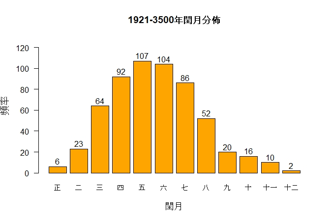
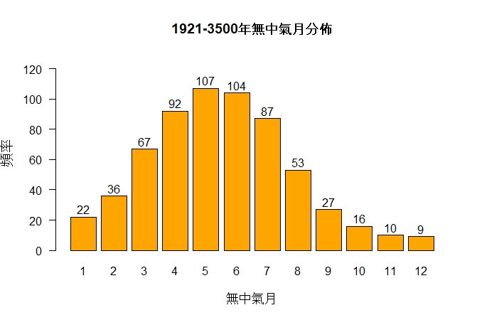

初稿: 2026年2月3日
自順治二年(1645年)採用定氣計算二十四節氣以來，閏正月和閏十二月至今未曾出現。我用《農曆的編算和頒行》GB/T 33661-2017 法則計算由現在到3500年間的閏月，發現閏正月只出現六次，閏十二月只出現兩次。下一次閏正月會出現在2262年(壬寅年)，而閏十二月要到中曆3358年(戊午年)才會出現。
以下詳述為什麼閏正月和閏十二月特別罕見。這裡假設讀者已經了解農曆編算法則網頁詳述的法則，這裡不會重複所有法則及相關的曆法概念。
以下計算是用我的公曆-中曆轉換 python 軟體套件執行，大部分的計算過程在這 Jupyter notebook 最後一節展示。
下面用Ny表示年首最接近公曆1月1日的中曆年，用Sy表示y歲，即從Ny-1十一月初一至Ny十一月初一之前一日。例如N1984指甲子年，始於1984年2月2日，終於1985年2月19日; S1984指N1983(癸亥年)十一月初一(1983年12月4日)至N1984閏十月廿九(1984年12月21日)。
S1921 – S3500有582個閏月，下圖展示這段期間的閏月分佈。

此圖證實了閏正月和閏十二月確是最罕見的閏月，在這1580歲間閏正月只出現六次，閏十二月只出現兩次。
出現閏正月的必要條件是無中氣月出現在雨水(2月19日左右)和春分(3月21日左右)之間，出現閏十二月的必要條件是無中氣月出現在大寒(1月21日左右)和雨水(2月19日左右)之間。這兩種閏月之罕見，一般解釋是說地球在近世紀於1月初過近日點，這期間地球運行比較快，使大寒與雨水及雨水與春分間的日數相對較小，無中氣月出現在相鄰兩中氣間的次數也因此較少，但以下分析顯示這只是部分原因。
下表列出在S1921 – S3500間相鄰兩中氣間之平均日數。
| 中氣區間 | 平均日數 |
|---|---|
| 冬至(十一月中) - 大寒(十二月中) | 29.483 |
| 大寒(十二月中) - 雨水(正月中) | 29.526 |
| 小雪(十月中) - 冬至(十一月中) | 29.692 |
| 雨水(正月中) - 春分(二月中) | 29.805 |
| 霜降(九月中) - 小雪(十月中) | 30.095 |
| 春分(二月中) - 穀雨(三月中) | 30.256 |
| 秋分(八月中) - 霜降(九月中) | 30.598 |
| 穀雨(三月中) - 小滿(四月中) | 30.760 |
| 處暑(七月中) - 秋分(八月中) | 31.065 |
| 小滿(四月中) - 夏至(五月中) | 31.187 |
| 大暑(六月中) - 處暑(七月中) | 31.366 |
| 夏至(五月中) - 大暑(六月中) | 31.408 |
可見閏月的出現次數與相鄰兩中氣間的平均日數確有密切關係，夏至(五月中)至大暑(六月中)的平均日數最大，預示閏五月應該最常見，事實上確是如此。如果假設平均日數與閏月出現的次數成反比，則從表中數據推斷閏月出現次數從多至少的次序應該是:閏五月、閏六月、閏四月、閏七月、閏三月、閏八月、閏二月、閏九月、閏正月、閏十月、閏十二月和閏十一月，這次序確與圖一的結果大致符合，但在閏九月後的次序錯了。冬至(十一月中) 至大寒(十二月中)的平均日數最小，但閏十一月並不是最罕見的閏月，由此可見僅憑相鄰兩中氣間的平均日數不足以解釋為什麼閏正月和閏十二月最罕見，肯定還有其他原因。
如前述，無中氣月是閏月的必要條件。現代農曆法則規定，閏月出現在閏歲中冬至後第一個無中氣月，雙中氣月和偽閏月的出現使情況變得複雜。「平歲」是指有十二個月的歲，「閏歲」指有十三個月的歲，「雙中氣月」指有兩個中氣的農曆月，「偽閏月」是指無中氣月但不是閏月的月份。
大寒(十二月中) 至雨水(正月中)間的無中氣月及雨水(正月中) 至春分(二月中)間的無中氣月在近幾個世紀確實出現過，下面考察幾個例子。
清穆宗同治九年(N1870)的大寒與同治十年(N1871)雨水之間就有一個無中氣月，但這無中氣月出現在平歲中，所以不能置閏而成為偽閏月，同治九年冬至和大寒都落在十一月，下一個月份沒有中氣。農曆N1984(甲子年)雨水與春分之間有無中氣月，是閏正月的必要條件，但這無中氣月出現在平歲中，因此同樣是偽閏月，此歲的冬至和大寒都落在十一月，下一個月份沒有中氣。農曆N2034(甲寅年)雨水與春分之間有無中氣月，是閏正月的必要條件，雖然這無中氣月出現在閏歲中，但是這是此歲的第二個無中氣月，錯失了閏正月的資格而成為偽閏月，農曆N2033(癸丑年)的大雪和冬至都落在十一月，下一個月是無中氣月，又是閏歲中冬至後的第一個無中氣月而成為閏十一月，然後大寒和雨水都落在十二月，下一個月是閏歲中的第二個無中氣月，成為偽閏月。
雨水和春分間的無中氣月會出現在N2053(癸酉年)、N2129(己丑年)、N2148(戊申年)、N2167(丁卯年)、N2205(乙巳年)及N2243(癸未年)，但情況與上述一樣，無中氣月出現在平歲中或是閏歲中的第二個無中氣月，所是都是偽閏月。這情況要到N2262(壬寅年)才有轉變，那會是自順治二年來六百多年間首次出現閏正月。大寒與雨水之間的無中氣月會出現在N2500(庚子年)、N2557(丁酉年)、N2595(乙亥年)、N2777(丁丑年)、N2872(壬子年)、N2891(辛未年)及N2986(丙子年)，但全部都是偽閏月，閏十二月要到N3358(戊午年)才會出現。
地球在近日點附近運行快使在這附近的中氣日期間隔較短，不但減少了在這些中氣之間無中氣月的出現，還增加了雙中氣月出現的頻率。朔望月的平均值是29.530589日，如果相鄰兩中氣的平均日數小於此數，則出現兩中氣同在一個農曆月的頻率多於出現在兩中氣之間的無中氣月。觀乎表一的數據得知有兩個中氣區間的平均日數小於29.53日:冬至(十一月中)至大寒(十二月中)和大寒(十二月中)至雨水(正月中)，所以出現含冬至和大寒的雙中氣月頻率多於出現在冬至和大寒之間的無中氣月; 出現含大寒和雨水的雙中氣月頻率多於出現在大寒和雨水之間的無中氣月。計算顯示在S1921–S3500間，含冬至和大寒的雙中氣月有17個，冬至和大寒之間的無中氣月有10個，含大寒和雨水的雙中氣月有14個，大寒和雨水之間的無中氣月有9個，此數據證實了理論的預測。這兩種雙中氣月的出現使情況變得非常有趣。
先分析如果含冬至和大寒的雙中氣月出現時的情況。由於冬至在這雙中氣月中，根據現代農曆法則這雙中氣月是十一月。農曆月的日數是29日或30日，從表一得知冬至至大寒的平均日數是29.48日，由此推出冬至在十一月初、大寒在十一月末，也可推出這十一月出現在平歲中，因為閏歲的冬至出現在十一月(大概)十九日以後。平歲有十二個農曆月，冬至至下一個歲的冬至之間有十二個中氣:十一月中(冬至)、十二月中(大寒)、正月中(雨水)、二月中(春分)、三月中(穀雨)、四月中(小滿)、五月中(夏至)、六月中(大暑)、七月中(處暑)、八月中(秋分)、九月中(霜降)和十月中(小雪)。已知冬至和大寒都在十一月，餘下的十個中氣落在餘下的十一個月中，所以必然有一個無中氣月，但平歲沒有閏月，當中的無中氣月只能是偽閏月。用 F 表示這無中氣月，F-1 表示 F 之前的那個月，F+1 表示 F 之後的那個月。由於 F 是無中氣月，而表一顯示相鄰兩中氣的平均日數是29.48日至31.41日之間。由此推出必有一個中氣出現在 F-1 的月末，另一中氣出現在 F+1 的月初。已知大寒出現在十一月末，十一月有可能就是 F-1，而 F 是十二月，出現在大寒與雨水之間，但大寒與雨水的平均日數是29.53日，未必有足夠多的日數容納一個農曆月，所以偽閏月 F 或會推遲到正月而出現在雨水與春分之間或更遲。這情況的實例是S1985，偽閏月是正月，出現在雨水與春分之間。另一例是S1871，偽閏月是十二月，出現在大寒與雨水之間。
現在分析含大寒和雨水的雙中氣月，用 D 表示這月，D-1 表示之前的那個月，D+1 表示之後的那個月等。大寒必然在 D 的月初，雨水必在月末。D 有兩種可能的情況。
第一種可能是冬至在 D-1，換言之D-1是十一月，D 是十二月。由於大寒在十二月初，冬至必在十一月初，所以 D 是平歲的十二月。平歲有十二個月，已知十一月中(冬至)在十一月，十二月中(大寒)和正月中(雨中)都在十二月，餘下的九個中氣(二月中至十月中)必然在餘下的十個月(正月至十月)中，所以有一個無中氣月。由於平歲沒有閏月，所有無中氣月都變成偽閏月。偽閏月可能在雨水與春分之間或遲些。這情況的實例是S2148，偽閏月在雨水與春分之間。
第二種可能是 D-1 是無中氣月，而冬至在 D-2 的月末，即是說D-2 是閏歲的十一月，D-1 是閏歲中冬至後第一個無中氣月，按農曆編算法則是閏十一月，D 仍是十二月但在閏歲中。閏歲有十三個月，已知十一月中(冬至)在十一月，閏十一月無中氣，十二月中(大寒)和正月中(雨水)都在十二月，餘下的九個中氣(二月中至十月中)必然在餘下的十個月(正月至十月)中，所以有一個無中氣月。由於這無中氣月不是閏歲冬至後的第一個無中氣月，又是偽閏月，偽閏月可能出現在雨水和春分之間或遲些。這情況的實例是S2034，偽閏月出現在雨水和春分之間。如我在農曆編算例子網頁所述，農曆N2033和N2034很特別，不單N2033十二月是雙中氣月，十一月也是雙中氣月，含小雪和冬至，另有無中氣月在N2033七月後的那個月，由於S2033是平歲，不能置閏，這無中氣月又是偽閏月。
由此可見在大寒和雨水之間的無中氣月及在雨水和春分之間的無中氣月確是較為罕見，當這兩種無中氣月出現時，往往又伴隨著雙中氣月而變為偽閏月。
要知道"丟失"的閏正月和閏十二月是否隱藏在偽閏月中，可以找出所有的無中氣月，看看是否能得到與表一日數預示的頻率次序。出現在正月中(雨水)和二月中(春分)之間的無中氣月無論是閏正月還是偽閏月都用'1'來記，出現在二月中(春分)和三月中(穀雨)之間的無中氣月無論是閏二月還是偽閏月都用'2'來記，其他無中氣月也用類似的記法。下圖顯示S1921 – S3500的無中氣月分佈。

可見各無中氣月的出現頻率基本上符合與相鄰兩中氣的日數成反比的關係，唯一例外是在十一月中至十二月中之間的無中氣(標記'11')與在十二月中至正月中之間的無中氣月(標記'12')的次序顛倒了，但是兩者都很小而且只是差了一個而已，極有可能是因為罕見(1580歲中只出現了10次和9次)而數據不足，無法反映真實頻率。
圖二中的 '1' 與 '12' 頻率明顯大大多於閏正月和閏十二月的頻率，顯示'1'和 '12' 的無中氣月確是隱藏在偽閏月中。'1' 的無中氣月在S1921 – S3500的數目是22，出現頻率多於'10'、'11' 和 '12'，但其中16個無中氣月變成偽閏月，以致閏正月數目只有6個，頻率少於閏十月和閏十一月的頻率，所以閏正月被雙中氣月抑制了。
同樣，'12' 的無中氣月與 '11' 的無中氣月頻率接近，這也是意料之中，因為從表一得知十二月中至正月中的平均日數是29.526日，而十一月中至十二月中的平均日數是29.483日，兩者只差0.043日。但是'12'的9個無中氣月中其中7個變成了偽閏月，剩下的2個成為閏十二月，閏十二月也被雙中氣月抑制了。
'11' 的無中氣月數目是10，雖然數目小，但全部是閏十一月，閏十一月完全沒有被雙中氣月抑制，這也不難理解，因為偽閏月不可能出現在冬至與大寒之間。設 N 是出現在冬至與大寒之間的無中氣月，N-1 是之前那個月，N+1 是之後那個月等，則冬至在 N-1 的月末，大寒在 N+1 的月初，所以 N-1 是閏歲中的十一月，N 是閏歲中冬至後第一個無中氣月，根據現代農曆法則 N 必然是閏十一月，所以 '11' 的無中氣月都是閏十一月。
順治二年(N1645)之前的中曆用平朔計算二十四節氣，兩中氣的時間間隔是常數並且大於三十日，由於中曆月最多三十日，不可能出現雙中氣月，定無中氣月為閏月就解決了置閏問題。改用定氣後，兩中氣之間的日數不是常數，而且可以小於三十日，於是有可能出現雙中氣月。由於一歲的中氣數目一般是十二，平歲有十二個月，閏歲有十三個月，如果有雙中氣月出現在平歲中，其餘十個中氣就會落在餘下的十一個月中，導致多了一個無中氣月成為偽閏月;如果有雙中氣月出現在閏歲中，其餘十個中氣就會落在餘下的十二個月中，導致閏歲有兩個無中氣月，其中一個是閏月，另一個是偽閏月。因此雙中氣月的出現使無中氣月的數目多於閏月所需的數目，額外的無中氣月成為偽閏月。正月中至二月中的無中氣月('1')以及出現在十二月中至正月中的無中氣月('12')有一大部分成為偽閏月。這兩種無中氣月數目本來已經不多('1'在S1921–S3500的數目是22，'12' 的數目是9)，偽閏月的出現進一部減少了閏正月和閏十二月的數目，使閏正月和閏十二月變得非常罕見。
或許有人會疑惑如果兩中氣的時間小於朔望月，怎可能在中間出現無中氣月。答案是農曆日始於朔日的午夜，而不是合朔時刻，現舉S2034的閏十一月為例說明。此歲的冬至在2033年12月21日 21:46 (UTC+8)，大寒在2034年1月20日 8:27 (UTC+8)，兩中氣之間的時間間隔是29.445日，但兩中氣日之間的日數是30日。有朔出現在12月22日 2:46 (UTC+8)，下一個朔在1月20日 18:02 (UTC+8)，兩朔的時間間隔是 29.636日，大於兩中氣之間的時間間隔，但兩朔日之間的日數是29，小於兩中氣日之間的日數。第一個朔日對應的農曆月始於12月21日的零時(而不是合朔時刻 2:46)，終於1月20日零時(而非合朔時刻18:02)，由於此月不含中氣而且是閏歲中冬至後第一個無中氣月，按農曆法則定為閏十一月。雖然第二個合朔時刻遲於大寒時刻，大寒與朔日仍在同一日，屬第二個合朔對應的農曆月。
冬至在十一月的日數和「閏餘」的概念相似，閏餘指冬至的月齡，即冬至離之前合朔的日數。回歸年有365.2422日，朔望月的平均日數是29.530589日。因365.2422 = 12×29.530589 + 10.875 = 13×29.530589 - 18.655，如果本歲是平歲，則下一歲的閏餘增加約10.875日，這是平均值，由於用定朔定氣，實際的日數在平均值一兩日間浮動; 如果本歲是閏歲，則下一歲的閏餘減小18.655日(平均值)。從閏餘的定義得知閏餘在0與朔望月之間，所以如果本歲的閏餘超過約18.655日，本歲是閏歲。閏餘18.655日約相當於冬至在十一月十九日或二十日，所以冬至出現在十一月初的歲是平歲，出現在十一月末是閏歲。